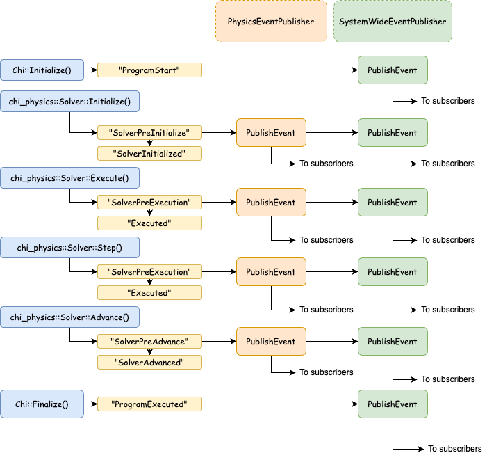

I Event System
openSn’s event system
We have some elements in openSn that follow the Publisher/Subscriber design
pattern. The basic functionality is captured with the base classes
EventPublisher and EventSubscriber, where multiple subscribers are
assigned to a publisher.
Events
Events are implemented as, a conceptually simple, data class Event and
has the following members:
Event::Name()Event::Code()Event::Parameters()
The latter member is a ParameterBlock supporting anything from simple
scalar quantities all the way through to complex hierarchies of data.
System events
Systems events are posted via the SystemWideEventPublisher singleton
and serves the purpose of being the central publisher where all events end up,
although, some publishers can attempt to handle events before this handler.
Events originating from this publisher are:
"ProgramStart""ProgramExecuted"
Physics events
Physics events are handled via the PhysicsEventPublisher
singleton and has the following basic events (although this list will be
extended in future):
"SolverPreInitialize""SolverInitialized""SolverPreExecution""SolverExecuted""SolverPreStep""SolverStep""SolverPreAdvance""SolverAdvanced"
PhysicsEventPublisher interaction with SystemWideEventPublisher
Order of operations and dependencies related to events can be resolved by using
different publishers. This is because the event publishers always form a
hierarchy with the SystemWideEventPublisher as the base. Any event published
by a leaf publisher will ultimately get forwarded to the
SystemWideEventPublisher. An example flow of events is shown below:
